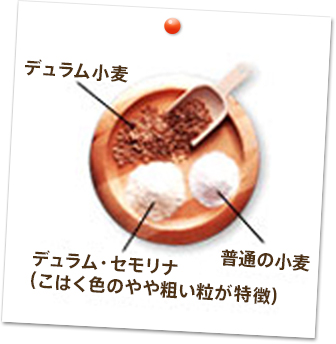
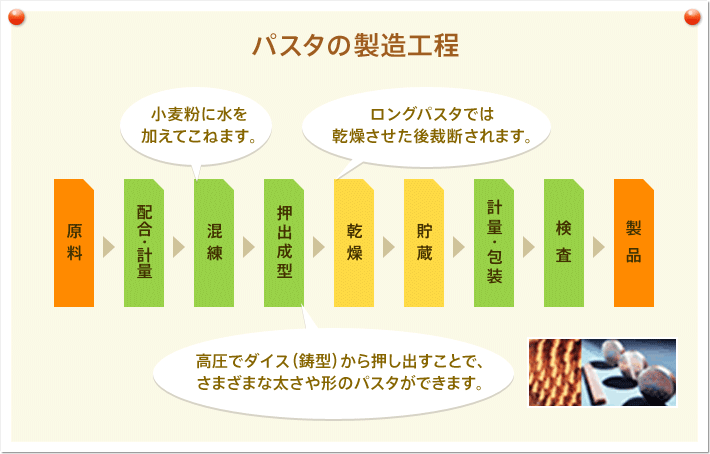

おいしさの由来はデュラム・セモリナ100％

パスタは小麦粉と水だけから作られる自然食品。
そしてデュラム・セモリナと呼ばれる小麦粉だけから、パスタならではのおいしさが生まれます。デュラム・セモリナとは、デュラム 小麦を粗挽きにしたもの。パンや天ぷら粉に使われる小麦とは種類が違うものです。
その特長は、良質のたんぱく質を多く含み、弾力性に富んでいるので生地の形成がしやすく、ゆでてもコシが強く形がくずれにくいこと。まさにパスタにぴったりの小麦粉です。
良質のデュラム・セモリナで作られる日本のパスタ
日本のパスタは、もちろんデュラム・セモリナ100％。 デュラム小麦は地中海沿岸、中近東、アメリカ、カナダなどの各地で生産されていますが、日本のパスタには、カナダやアメリカで生産された、たんぱく質含有量 の多い良質のものが使われています。

良いパスタの見分け方
- 1デュラム・セモリナ使用の表示があるもの
- 2透明度が高く、こはく色でつやのあるもの
- 3白い斑点やひび割れのないもの
- 4弾力性に富み、力を入れて折ると澄んだ音をたて、折れ口がガラス状になるもの
この4点がおいしく品質のよいパスタのポイント。でも包装されて中身がよく見えない場合もあるので、JAS （日本農林規格）のマークのついた製品を信頼の目安にすることをおすすめします。JAS規格では、原料、製法、製造する場所・設備、さらには品質管理責任者などを厳しく規定し、着色料、麺質改良剤、保存料の使用を一切禁止しています。また安心・安全にご使用いただけるよう、JASの製品には必ず品名、原材料名や内容量 、賞味期限、保存方法、調理方法（ゆで時間）、製造者が表記されています。また、製品に関するお問い合わせ先も明記されています。